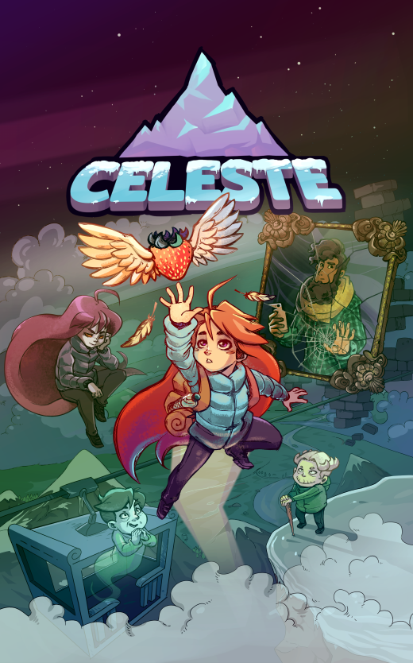
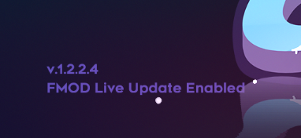

FMOD Studio User Manual 1.10
Game sound design is a field with a lot of depth. There's always something new to learn, and whether you're a beginner or a veteran of the field, you can learn a lot by looking at the projects that other sound designers have made.

Celeste is an award-winning title from Matt Makes Games, with music by Lena Raine and sound design by Power Up Audio. The respective owners have generously agreed to make the FMOD Studio project for Celeste available to the public, which means it's now yours to explore and play with! (Within limits, that is. There's a full EULA at the end of this document.)
Nothing has been left out: Every sound effect, song, and hidden audio easter egg in Celeste is in there, just waiting to be discovered. Kevin Regamey, the Creative Director and Co-Founder of Power Up Audio, has written detailed notes within the events of the project, explaining what it does and why he made the decisions he did.
But the best way to learn is by doing. If you have purchased a copy of Celeste on your Windows or Macintosh computer, you can connect to the running game using FMOD Studio's Live Update feature, and make changes to the game's sound as you play.
If you haven't already downloaded a copy of Celeste's FMOD Studio project, you can find it on the Demos tab of our downloads page. You'll also need a copy of FMOD Studio version 1.10.xx installed on your machine (meaning any patch version of 1.10 will work). FMOD Studio can also be downloaded from our downloads page. You'll need to sign in to see the downloads, but don't worry: If you don't yet have an FMOD account, making a new one is free.
You'll need to extract the contents of that archive to a folder on your hard drive before you can open it in FMOD Studio. Loading the project from inside a compressed archive, or from a network drive, interferes with FMOD Studio's ability to load the project's contents.
Once you've installed and launched FMOD Studio, simply select "File > Open...", navigate to and select "celeste_audio.fspro" in the folder you extracted the Celeste project to, and click on the "Open" button to load the project.
Once you've loaded the project, you're free to explore it, make changes, and experiment with everything it contains. Kevin has written a note to get you started in the event named "!!!_README_FIRST", and if you'd prefer a more guided experience, he's recorded a Twitch stream explaining a lot of the project.
As mentioned above, if you've got a copy of Celeste installed on your computer, you can connect FMOD Studio to the game as it runs, allowing you to monitor and profile everything that's playing back. What's more, you'll see all the changes you make to the FMOD Studio project apply in the game, in real time, as you play. This is a great way to understand what every event does and how it all fits together in the finished game.
You'll need Celeste version 1.2.2.4 or later. If you bought the game on Steam and have automatic updates enabled, you already have the right version of the game. If you're not sure what version you have, check the title screen. The version number is shown in the bottom-left corner.
Before you can connect to the game, though, there's a couple of things you'll need to do.
You'll need to enable FMOD Studio Live Update in Celeste's settings. This isn't something you can do from inside the game, so you'll have to manually edit its settings file. This is a text file, and you can edit it using a normal text editor application like Notepad (on Windows) or TextEdit (on Mac OS X).
The "settings.celeste" file is located in Celeste's "saves" directory. Assuming you bought the game on Steam, the default location of this directory on Windows is C:\Program Files (x86)\Steam\steamapps\common\Celeste\Saves. On Mac OS X, it's ~/Library/Application Support/Celeste/Saves. This directory is generated the first time the game autosaves, so if it's not there yet, try playing through the game's prologue or changing some of the settings in the options menu.
Near the end of the "settings.celeste" file is the line <LaunchWithFMODLiveUpdate>false</LaunchWithFMODLiveUpdate>. Change this to <LaunchWithFMODLiveUpdate>true</LaunchWithFMODLiveUpdate>, then save and close the file.
The message "FMOD Live Update Enabled" will appear on the title screen next time you launch the game, as shown in the screenshot below.

To make the Celeste FMOD Studio project smaller and quicker to download, we converted each of its audio assets into a compressed .ogg file. A side effect of this is that FMOD Studio will recognize the files in the project as being different to the ones used by the game, and so will take slightly longer to sync with the game when you start a live update session. You can avoid this delay by building a new version of the banks that use the .ogg files.
Start by using your file manager to navigate to the folder that contains the built banks. By default, this is C:\Program Files (x86)\Steam\steamapps\common\Celeste\Content\FMOD on Windows, and ~/Library/Application Support/Steam/steamapps/common/Celeste/Celeste.app/Contents/MacOS/Content/FMOD on Mac OS X. Within that directory, look for the "Desktop" folder. This folder contains the game's built banks.
Rename the "Desktop" folder to "Desktop_original". This ensures that when you build new versions of the banks, they won't overwrite the original ones, allowing you to restore the originals later. Of course, you could just re-download the original banks from the online store you bought Celeste on, but keeping a local copy can save you some time and effort.
In FMOD Studio, select "Edit > Preferences..." to open the preferences dialog, click on the "Build" tab, then set the "Built Banks Output Directory" to the "Content/FMOD" folder mentioned above. This ensures that when you build new versions of the banks, they automatically get put in the right place for the game to use them.
Finally, in FMOD Studio, select "File > Build..." to build a new version of the Banks using the .ogg audio assets.
Once you've set up the project for live update, launch the game. Then, in FMOD Studio, select "File > Connect to Game..." When the "Connect to Game" dialog appears, click on the "Connect" button.
The live update indicator in the bottom-right corner of the FMOD Studio window will display "Syncing" for a few moments before changing to display "Live Update ON". This indicates that FMOD Studio has successfully connected to the game, and any changes you make to the FMOD Studio project will immediately be reflected in the game for the remainder of the live update session.
Once connected to Celeste with live update, you can open FMOD Studio's profiler window and click the record button to begin recording a profiler session. This is a great way to discover what's playing in the game at any given time.
END-USER LICENSE AGREEMENT: CELESTE FMOD PROJECT AND SOURCE AUDIO CONTENT
This Celeste FMOD Project and Source Audio Content End-User License Agreement
(the "EULA") is a legal agreement between you, and Power Up Audio Inc and Lena
Raine. By downloading, viewing, and in any way using this Celeste FMOD project
file (the "PROJECT"), you agree to be bound by the terms of this EULA. If you
do not agree with this EULA, do not use this PROJECT. All rights not expressly
granted to you here are reserved by Power Up Audio Inc and Lena Raine.
Upon acceptance of this EULA, Power Up Audio Inc and Lena Raine grant a license
to you to use this PROJECT expressly for educational or personal purposes only.
This license is granted worldwide and in perpetuity.
This EULA includes license terms for:
a) The PROJECT, and any .bank files built thereof (altogether, the "FMOD
CONTENT"), and
b) The included .ogg sound and music files (altogether, the "SOURCE
AUDIO").
GRANT OF LICENSE:
1. FMOD CONTENT:
You may modify, remix, redesign, and build upon the FMOD CONTENT.
You may share the FMOD CONTENT, original or otherwise modified.
You may broadcast video of the FMOD CONTENT, original or otherwise
modified.
If you share the FMOD CONTENT, you must indicate if modifications were made,
and make your best effort to describe those modifications.
You may not use the FMOD CONTENT for commercial purposes.
If you modify and share the FMOD CONTENT, you must distribute the modified
FMOD CONTENT under this same license.
You may not apply legal terms or technological measures that legally
restrict others from doing anything this license permits.
2. SOURCE AUDIO:
All SOURCE AUDIO is owned by either Power Up Audio Inc. or Lena Raine.
You may not share, copy, or otherwise redistribute the SOURCE AUDIO.
You may not use the SOURCE AUDIO for any commercial or non-commercial
purpose unrelated to the PROJECT.
You may modify, remix, redesign, and build upon the SOURCE AUDIO, provided
it is for a purpose strictly related to the PROJECT.
BOTTOM LINE:
This FMOD Project and the content herein has been released in the effort of
contributing to education and welcoming discussion in game development. This
doesn't happen very often, as many studios and individuals worry about trade
secrets being revealed, or about content being copied and redistributed without
permission. That said, please respect our choice to release this project by
using it as intended - for non-commercial personal and/or educational purposes
only.
If you have any questions about the FMOD Project, or about this EULA, please
feel free to message us at contact@powerupaudio.com.